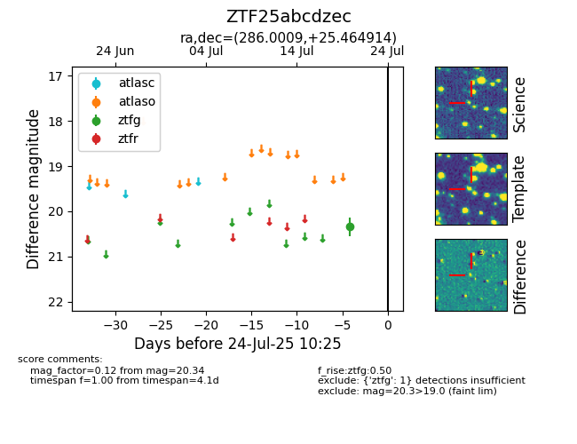

Target ZTF25abcdzec at 2025-07-24 10:25, see:
FINK: fink-portal.org/ZTF25abcdzec
Lasair: lasair-ztf.lsst.ac.uk/objects/ZTF25abcdzec
ALeRCE: alerce.online/object/ZTF25abcdzec
alt names
ZTF25abcdzec (ztf,fink)
coordinates:
equatorial (ra, dec) = (286.0009,+25.46491)
galactic (l, b) = (57.1357,+8.74403)
photometry
last ztfg=20.34
1 ztfg detections
